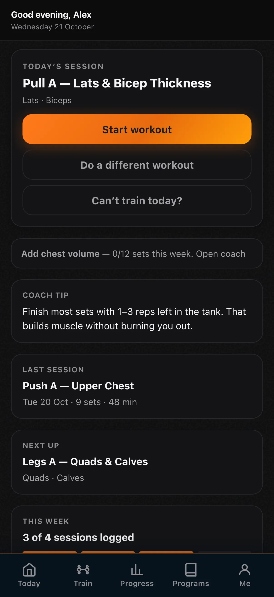

Illustrative story Illustrative story. People and data are fictional.
PulseCap · Riyadh, Saudi Arabia
How Khalid kept moving after clearance
Khalid’s doctor cleared light training. Large text on phone, iPad for calm plan view, laptop when his son visits to help.
“Slow is still training.”

Before and after
Illustrative numbers from a fictional week.
Before
After PulseCap
A day with Khalid
-
Morning walk log
Before fajr traffic, Khalid logs a 25-minute walk on his iPhone with large text — slow is still training, and the doctor’s clearance lives in the note.
-
Light session plan
Afternoon iPad shows today’s light weights clearly enough that he does not need his son to interpret tiny labels at the gym.
-
Sets done
Phone logger for two machines only; he finishes, drinks water, and leaves without chasing a streak or a personal record.
-
Son checks in
When his son visits they open the laptop together and skim the week at a glance — walks logged, light days honest, nothing performative.
-
Tomorrow ready
Phone reminder set for tomorrow’s walk. He locks the screen feeling capable, not behind.
Watch it
A day across devices — silent walkthrough with captions. No autoplay with sound.
Read transcript
Khalid logs walks and light weights across phone and iPad, reviews with family on laptop. Fictional.
Features Khalid uses
Illustrative story. People and data are fictional.